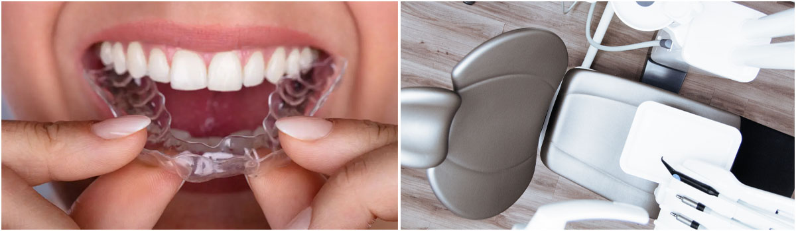
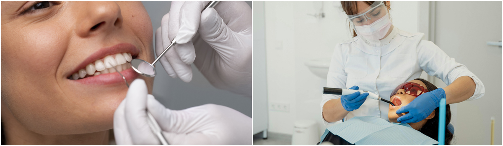

Binai Hortz Klinika Irunen
Irungo erreferentziazko odontologia-zentroetako bat

Binai Klinikak odontologia orokorreko zerbitzuak eskaintzen ditu Irunen, gure pazienteen hortzetako eta hortzetako osasun estetikoko arazoei irtenbideak eskainiz.
Espezialitate odontologiko guztiak azken aurrerapen teknologikoekin lantzen ditugu, eta erosotasuna eta arreta profesionala ziurtatuta dituzten instalazio modernoak ditugu. Elitxuren anbulatorioaren ondoan gaude.

Gure taldea: Zure ahoko osasunaz arduratzen diren profesionalak
Binai Hortz Klinikan, prestakuntza handiko profesional, odontologo eta laguntzaile talde bat dugu, etengabeko prestakuntzan, eta horiek arreta pertsonalizatua eta kalitatezkoa emateaz arduratzen dira. Odontologia maite dugu eta zure ahoko ongizatearekin konprometituta gaude.

Zergatik aukeratu?
Irungo Binai Hortz Klinikan, honela bereizten gara:
• Kualifikazio handiko eta etengabeko prestakuntzan dauden profesionalen taldea.
• Abangoardiako teknologia diagnostiko zehatzetarako eta tratamendu eraginkorretarako.
• Ahoko edozein arazori erantzuteko espezialitate ugari.
• Arreta pertsonalizatua eta hurbila, paziente bakoitzaren beharretara egokituta.
• Kalitate handiko protesi pertsonalizatuetarako hortz-protesien laborategia.
Zer hortz-tratamendu eskaintzen ditu Binai Hortz Klinikak?
Hortz-tratamendu ugari eskaintzen ditugu, besteak beste:
• Inplantologia
• Ortodontzia
• Hortz-estetika
• Odontologia orokorra
• Haurren odontologia
Denbora asko daramazu ahoko azterketa egin gabe?
Ez atzeratu gehiago eta etorri guregana.
Inplantologia-zerbitzuak Binai hortz-klinikan - Odontologo profesionalak Irunen